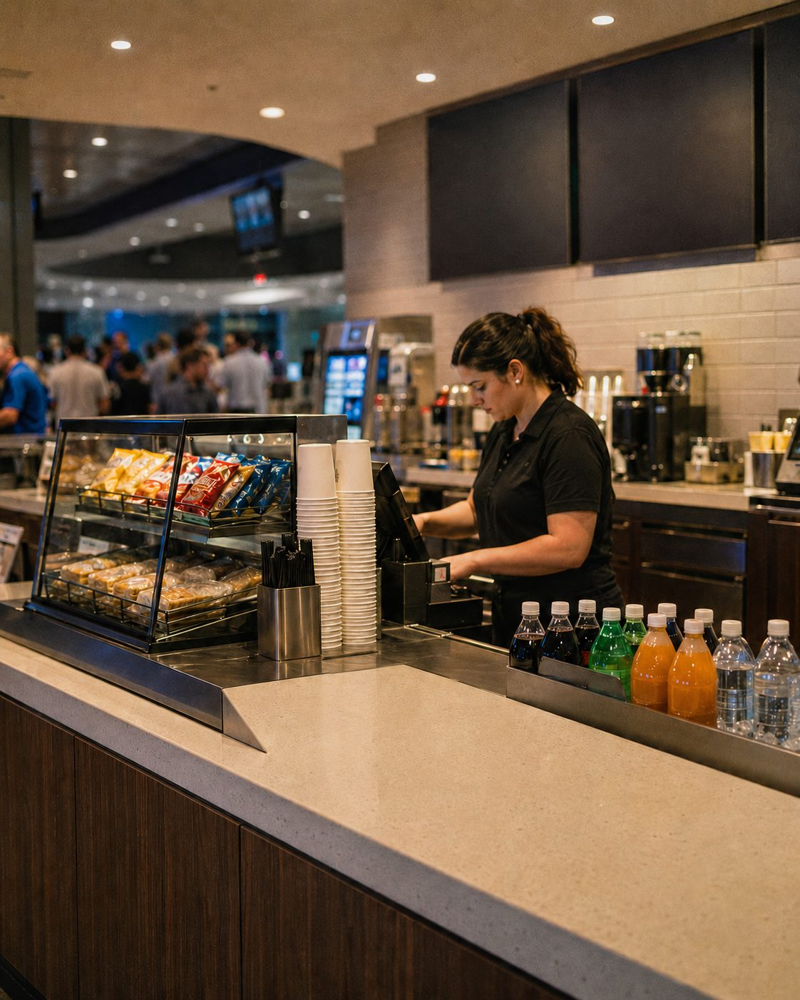
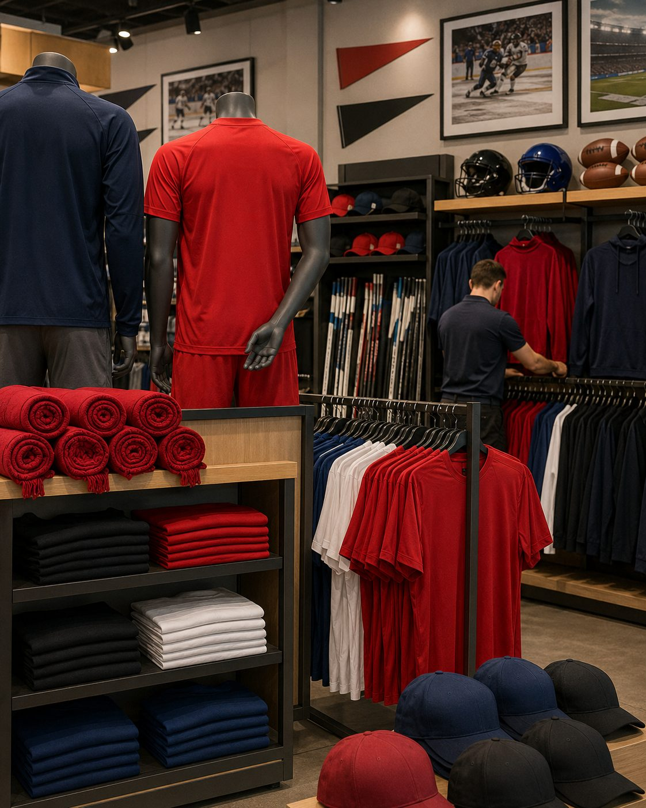

Keep the Loyalty Your Fans Already Give You
Every ticket, every concession, every jersey builds a relationship with your fans. CredX keeps it yours: access to the data, the loyalty, and the next game.
Forget the old system.
Here is a new one.
One that you belong to, instead of one that owns you.
The value your business creates belongs to your business. CredX is how that happens. This is not another product to buy. It is a movement to join, built so the people and businesses who create the value are the ones who keep it. Your customers stay where they started, and so does your access to the data they create.
That is the real switch.
The team that understands the data
understands the fan.
Right now your payment processor runs the transaction, and the legacy credit network keeps everything that comes after: who your fan is, what they spend, and when they will come back. CredX puts that back in your hands. Your credit facility, your brand, your fans.
The Team “Your fans were already loyal. A legacy credit network was the only one profiting from it.”
You built the franchise. Your fans show up, in the cold, season after season. But every ticket and every concession sent a piece of your margin to a system that does not know your fan's name. CredX gives that back — not just as savings, but as a tool: lower costs across every transaction, built-in revolving credit with no lending risk on your books, and a data network that tells you who your fans really are.
A growing community of teams and venues, done handing their loyalty to a legacy credit network. This is your network. Finally.
The Fan “They have been the product for long enough.”
Every time they tap their card at the gate, someone they have never met profits from their loyalty, and the value piles up with a legacy credit network instead of going back to the team they love. CredX changes that. Fans benefit from the data they generate, access revolving credit at roughly half the rate of a standard card — approximately 11% versus the national average of 22.97% — and keep more of what they earn with the teams and venues where they spend.
This is a shift in who the game works for.
The Lender “Finally, credit that earns where the spending already happens.”
Community lenders have always been closer to their members than the big networks, but the legacy credit network always captured the transaction. CredX changes the rail: fund embedded credit directly at the point of sale, a diversified, closed-loop asset class, with delinquency controls built in so risk stays managed.
The old system extracted value from all three. CredX returns it.
"We believe in true partnership so much we put our own money into your business — then give it to your clients, presented under your brand. Who partners like that?"
— Kendall, Founder, CredX
Your access to fan data is the asset no one gave back. Until now.
Three things become yours the day you sign:
The relationship stays in your team's name, not a legacy credit network's. The fan who bought season tickets and three jerseys belongs to you.
Consent-driven and de-identified: which fans come back, which segments spend the most on concessions and merchandise, and when demand peaks.
A closed-loop value-back program in your team's own currency, where $1 spent is $1 earned, that keeps your fans spending with the team, not with a legacy credit network's program.
Your team's name. Our infrastructure.
Everything the fan sees carries your brand. The technology, compliance, and credit run behind the scenes. The relationship is yours.
Three ways CredX puts money back in your franchise.
Interchange recovery runs from 40% up to 85%
$6,000 per $1M with CredX, against roughly $36,000 with legacy credit networks. On a $60,000 night at the gate, that is most of it staying with your team. That example sits at the top of the published range; results vary by volume and card mix.
Earn on the credit you used to give away
Revolving credit of up to $5,000 in your team's own brand — your fans carry your team's currency — approved in about 20 seconds at the concession or the gate, at roughly half the rate of a standard card. You are paid in full and upfront, and the risk stays with the community lender partners that fund the credit, never on your books.
See your fan base in real time
A monthly dashboard in plain language, not raw numbers: which game nights peak, which segment drives concession and merchandise revenue, and who is about to lapse on their season tickets. The intelligence your current setup never handed you.
A UK retailer saw orders that used embedded lending run 321% larger than its standard PayPal transactions, with 35% of its PayPal sales choosing to pay over time (PayPal case study, Q1 2023).
Move the slider. See what stays with your team.
Set your real monthly card volume and watch the recovery add up across the season.
Recovery runs from 40% up to 85% of standard interchange, depending on qualifying volume, so the figure above is a range rather than a single outcome. Results vary by volume and card mix. Based on roughly $36K interchange per $1M with legacy credit networks, against $6K per $1M with CredX.
Get my savings estimateFour steps. Your ticketing, POS, and payment stack stay exactly as they are.
Sign a Merchant Network Agreement
Onboarding runs about 4 to 8 weeks. Your ticketing platform, POS, and payment processor all stay in place.
Nothing changes for your fans
Your checkout is unchanged and there is nothing new for your fans to learn — no new terminals or hardware to install. A QR-code flow runs underneath at the gate and the concession, capturing the interchange value and fan data your current setup leaves behind across every transaction.
Your monthly report arrives
Interchange recovered and value-back earned, broken out per venue and in aggregate.
Fans get branded credit and value-back
Revolving credit of up to $5,000, issued in your team's own brand and approved in about 20 seconds at the gate, with value-back accruing in your team's own currency at $1 for every $1 spent. The relationship stays yours.
Built for the teams, venues, and leagues whose fans keep coming back.


- Professional sports teams (NHL, CFL, MLS, WHL and equivalents)
- Stadiums and arenas
- Concession and hospitality operators
- Leagues and governing bodies
- Ticketing platforms
- Minor and junior leagues
If your fans come back and pay by card, CredX is built for you. $250K or more per month in card volume and the savings and data benefits scale with you.
Ready to keep your fans?
Two quick steps. Start with the basics — we will take it from there.
Questions teams ask before signing
Does CredX replace my ticketing or payment processor?
No. CredX runs on the value layer underneath your existing setup. Your ticketing platform, POS, and payment terminals all stay in place, and it requires no new hardware at the gate or the concession. Typical integration runs 4 to 8 weeks.
What types of sports organizations does this work for?
Any team, venue, or league with recurring fans and meaningful card volume: professional teams, stadiums and arenas, concession and hospitality operators, leagues and governing bodies, ticketing platforms, and minor or junior leagues. If your fans come back and pay by card, CredX applies.
Can CredX support a multi-venue or league-wide rollout?
Yes. One master account, individual venue or team branding, and consolidated reporting. Each venue sees its own interchange recovery and value-back numbers. Across a league, every team runs its own branded credit and value-back layer on shared infrastructure, with a distinct currency per team.
Can fans use it outside the venue?
Yes. Once a fan holds revolving credit in your team's brand, it works at any participating merchant, and your team's brand follows the fan beyond game day.
Is my fan data really mine?
Yes. Consent-driven, opt-in by default, de-identified for analytics, and handled under Canadian privacy law, including PIPEDA. The fan relationship stays yours, never a legacy credit network's.
How soon do I see savings?
Interchange recovery starts the month after activation, reported per venue and in aggregate.
Who qualifies?
Teams, venues, and leagues processing $250K or more per month in card volume. Single-venue and multi-venue organizations both qualify — the savings and data benefits are proportional to your volume.